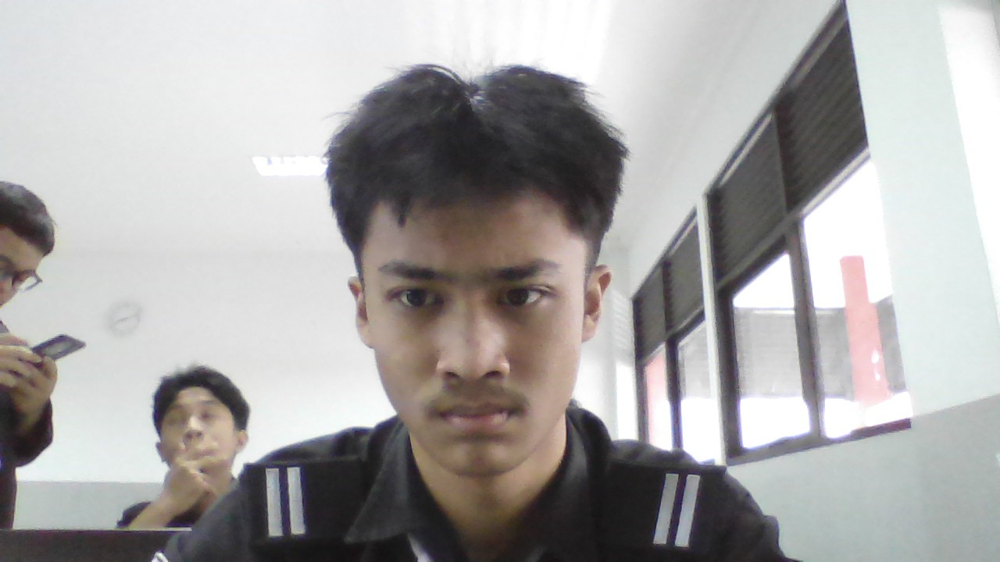

Saya adalah siswa SMK Telkom Bandung yang punya minat dibidang pemrograman dan teknologi.
Hubungi SayaSaya saat ini bersekolah di SMK Telkom Bandung jurusan Pengembangan Perangkat Lunak dan Gim (PPLG) atau Rekayasa Perangkat Lunak (RPL) sebagai peminatan saya saat ini.
Mencoba berbagai fitur dan kode yang bisa diterapkan ke website.
Membuat game sederhana yang terinspirasi dari game Hungry Shark.
Membuat,merancang,dan mendesign board game berjudul TheLastShell, terinspirasi dari game BuckShot
Membuat web portofolio di kelas 10 sebagai latihan tugas.